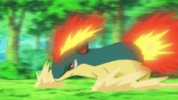

Quilava evolves from Cyndaquil at level 14 and evolves into either Typhlosion or Hisuian typhlosion depending on what region it is in. Quilava is known as the "Volcano Pokemon" and can shoot lava out of its head and lower back.
Like Cyndaquil, its fur is fire-proof and can widthstand fire attacks from other Pokemon. Quilava's flames burn hotter when ready for battle to show them off.


Unlike Cyndaquil, Quilava is more cautious but will fight back when threatened. Quilava is rarley seen in the wild, but can be found within Space-Time Distortions in Legends: Arceus.
Quilava evolves into either Typhlosion or Hisuian Typhlosion at level 36.
>Typhlosion<